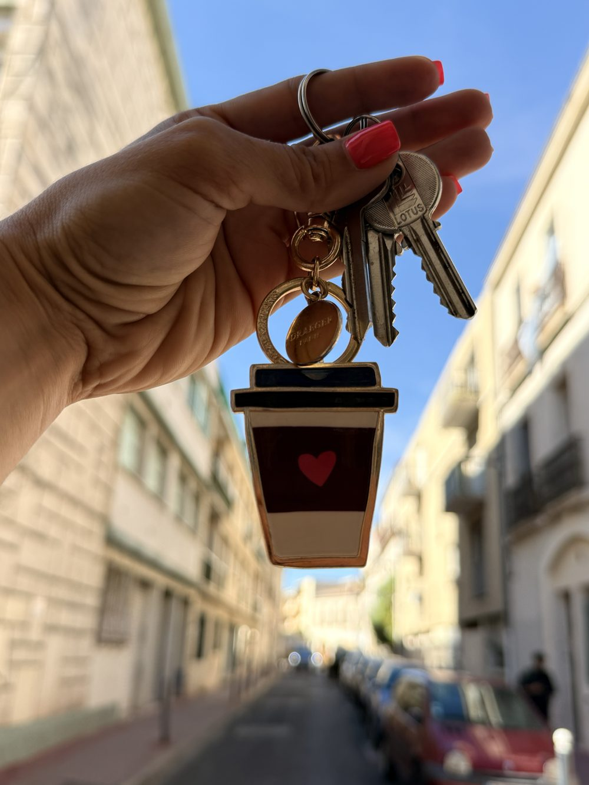
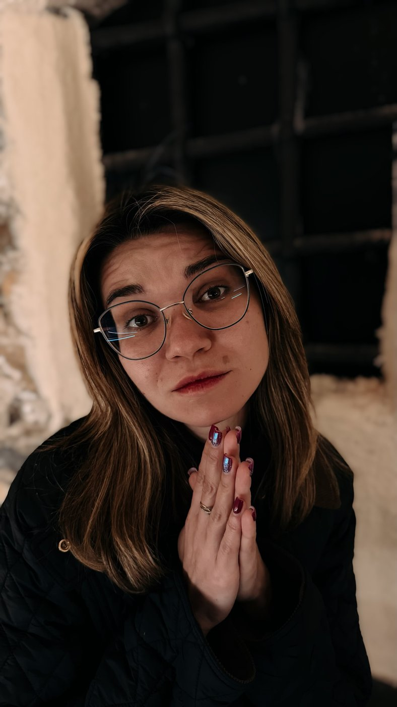
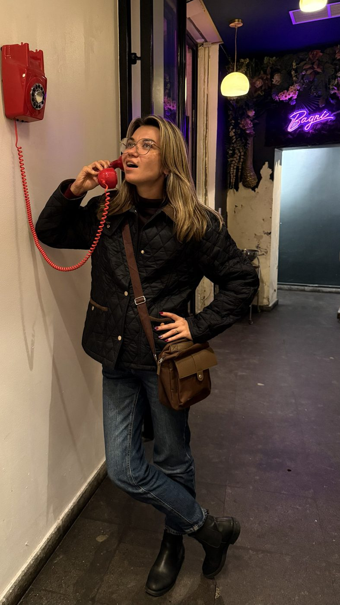
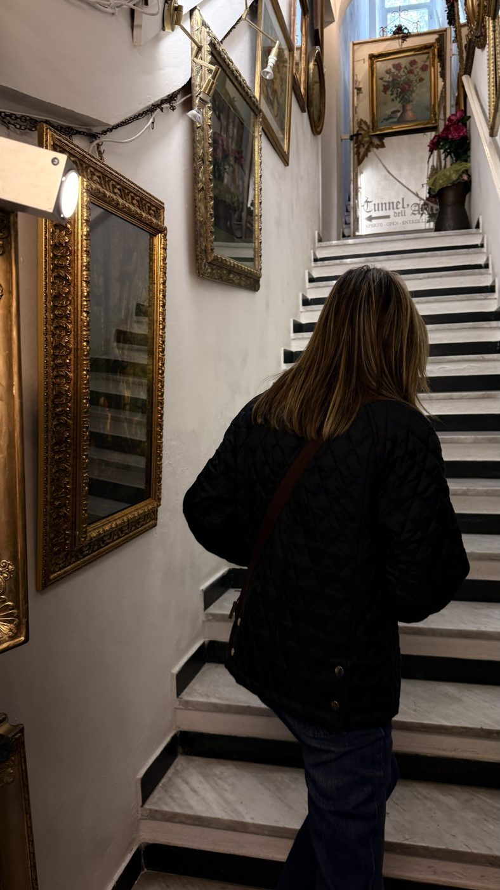
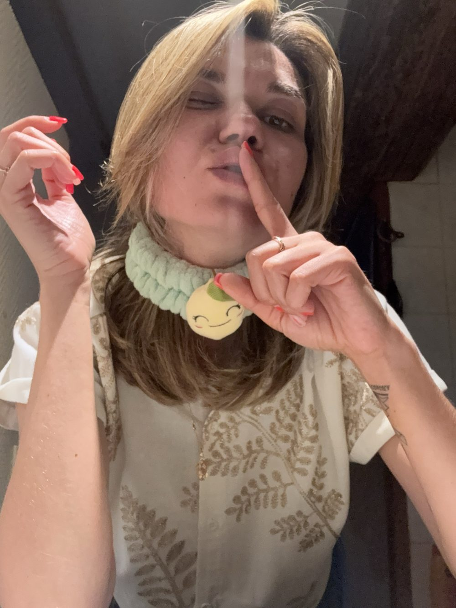
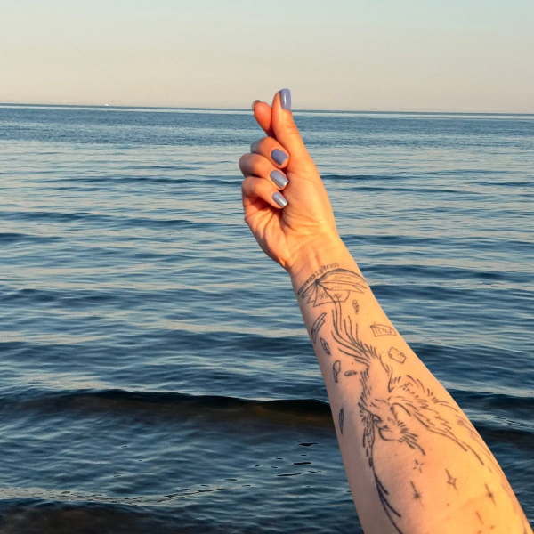

1. Результат, а не «направление»
Не «развивать тему жилья», а «живу в своей квартире». Цель, которую можно проверить фактом, а не ощущением.
Групповой эксперимент для тех, кто переехал — во Францию, Испанию, Германию, США, Канаду или куда угодно ещё — и строит жизнь, работу или бизнес заново. 90 дней мы перестаём уговаривать закрытые двери, идём за своими желаниями, действуем — и смотрим, где мир отвечает встречным движением.
До 10 человек. Zoom раз в неделю. Первый месяц бесплатно, дальше 15 € или 15 $ в месяц, выйти можно когда угодно.

Ключи от своих апартов. Не «повезло», а перестала стучать туда, где не открывают.

Ну поверьте, пожалуйста: я не верблюд. Вот справка. И ещё одна. И перевод справки.
Если вы переехали, то сто процентов узнаете хотя бы пару кадров:
Это вечная песня, в которой все вокруг не такие: местные не такие, миграционка не такая, работодатели не такие, мужики не такие, женщины не такие, клиенты не такие. Знакомо, понятно, и иногда правда. Но гуси от этого такими не становятся, а ваша жизнь стоит на месте. Поэтому здесь мы не перемываем им косточки по двадцатому кругу, а смотрим, чего хотите вы, что вы для этого делаете — и чем на это отвечает реальность.
Какую жизнь и бизнес можно построить за 90 дней, если перестать сливать ресурс туда, где не отвечают взаимностью, — и начать вкладываться туда, где есть встречное движение?
Это не про «не получилось — бросай». Наоборот: учимся отличать сопротивление, через которое стоит идти, от тишины, которую пора принять как информацию.
Алло, реальность? Это снова я. Вы мне перезвоните?

Квартира во Франции без гарантий, с А1, CAF и EDF — это не везение. Это алгоритм. Он работает в любой стране, и мы переносим его на вашу цель: работу, доход, бизнес, свой круг.
Не «развивать тему жилья», а «живу в своей квартире». Цель, которую можно проверить фактом, а не ощущением.
Вместо «почему мне не отвечают?» спрашиваем «что из этого зависит от меня сегодня?» и делаем именно это.
Квартиру я нашла, потому что была подписана на 15 групп. Строим вам такое же поле: люди, сообщества, площадки, организации.
Без трёх дней раздумий и совещаний с десятью друзьями. Возможность сразу превращается в действие, а не в «надо бы написать».
100% моя ответственность ≠ я обязан(а) всё тащить в одиночку. Люди, рекомендации и сообщества — это рычаги.
EDF отключил свет — решаем EDF. А не «наверное, весь переезд был ошибкой».
Каждый месяц в одном ритме: ставим цель → придумываем гипотезы → приносим, что вышло → подводим итоги и выбираем. От сезона к сезону меняется фокус.
«Где я сейчас»
«Где мне отвечают»
«Моя следующая глава»

Ступенька за ступенькой. Лифт в этом здании не предусмотрен — зато видно, куда идёшь.
Между встречами — не домашка ради домашки, а действия, после которых реальность хоть что-то отвечает.
Круг работает, только когда в нём безопасно говорить правду. Поэтому правила простые, и я за ними слежу.
Что было в круге — остаётся в круге.

Коуч, предприниматель и переехавшая. Живу в Монпелье.
31 августа 2026 моя жизнь развернулась на 180°: вышла из отношений → переехала → свои апарты и обязательства перед собой.
Что было дальше — без монтажа:
Пока живу соло-жизнь. Попытки отменить соло-режим пока не увенчались успехом. Записываю в данные, без драмы.
Coaching.Up University: Level 1 (по стандартам ICF) и Level 2 (EMCC и Association for Coaching). Сейчас прохожу сертификацию ICF на уровень PCC. Сертификаты


Подписка без ловушек: не зашло — просто не продлеваете.
0 €4 встречи в Zoom и чат. Пробуете формат без обязательств.
Хочу в круг15 € / 15 $В месяц с участника, оплата в евро или долларах. Выйти можно в любой момент.
Спросить в TelegramДа. Цель может быть про работу, доход, язык, жильё, круг общения или своё дело. Механика одна и та же.
Нет. Это групповой коучинг: цели, действия, факты из реальности. Если нужна помощь психолога или психотерапевта, подскажу, куда обратиться.
Да. Круг онлайн: Франция, Испания, Германия, США, Канада — не важно, где вы. Время встреч подбираем под часовые пояса участников, оплата в евро или долларах.
На русском. Местные языки — только в историях про то, как мы с ними воюем.
Первый месяц бесплатный. Дальше — подписка, из которой можно выйти в любой момент, без объяснительных.

Набираю группу до 10 человек. Напишите мне «Хочу в круг» — и первый месяц бесплатно.